Параметризация — исправления1.1.2
Фактические WPF-классы SAB.dll, тестовые данные вне Revit. Выполнение команд и операции с моделью не проверены. Popup снят отдельно с actual PART_Popup.Child.
check-activation-notification
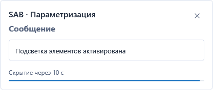
check-settings-empty-minimum
check-settings-empty-search
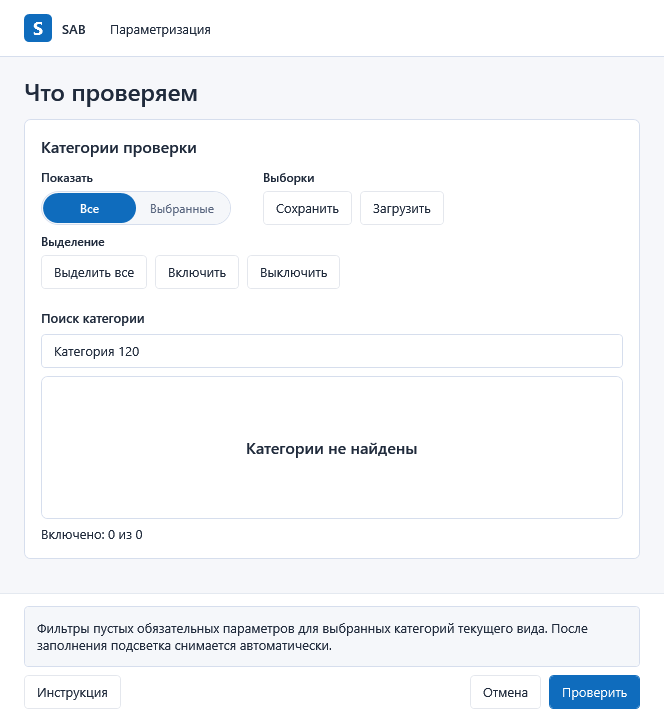
check-settings-empty-validation
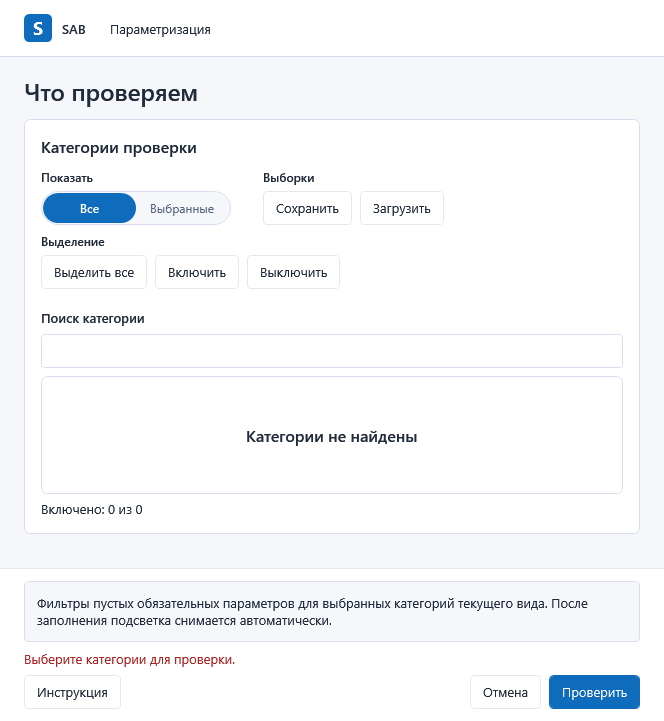
check-settings-empty
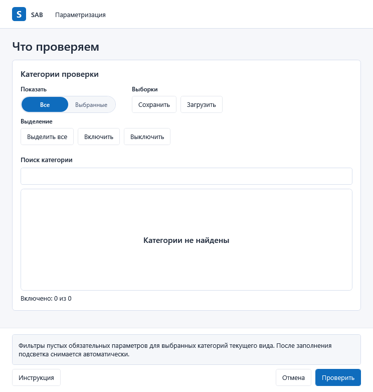
check-settings-minimum-last-row
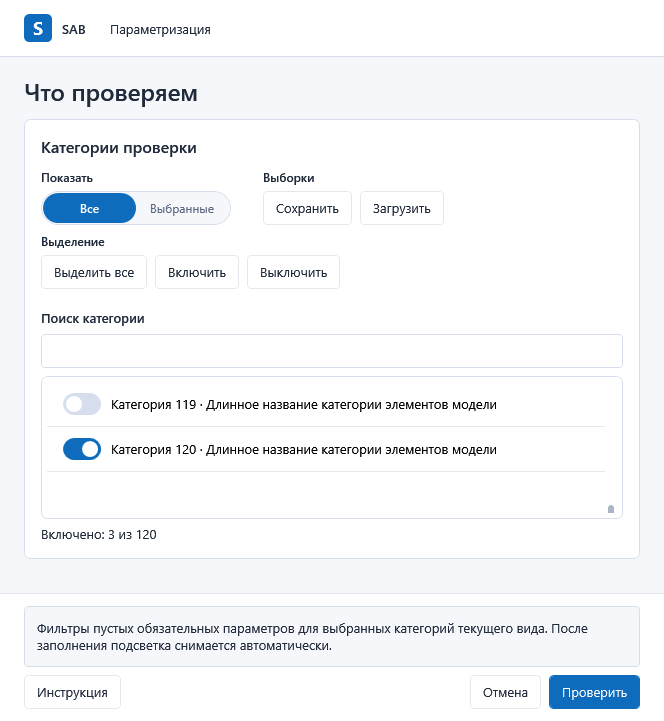
check-settings-minimum
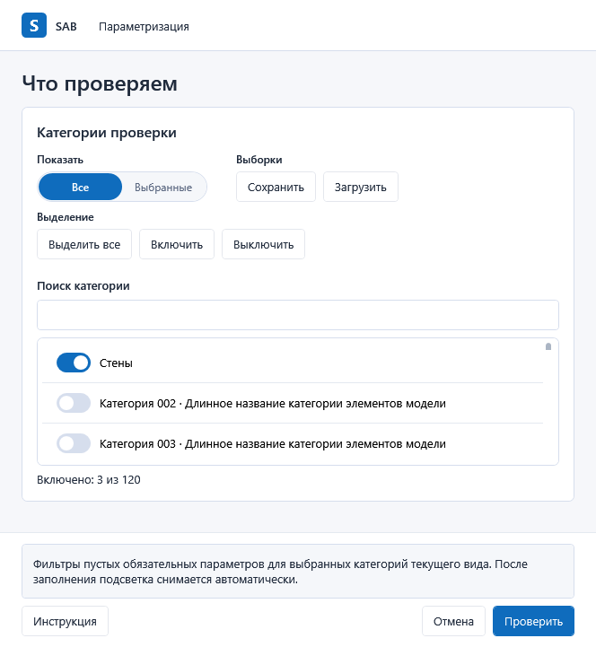
check-settings-normal
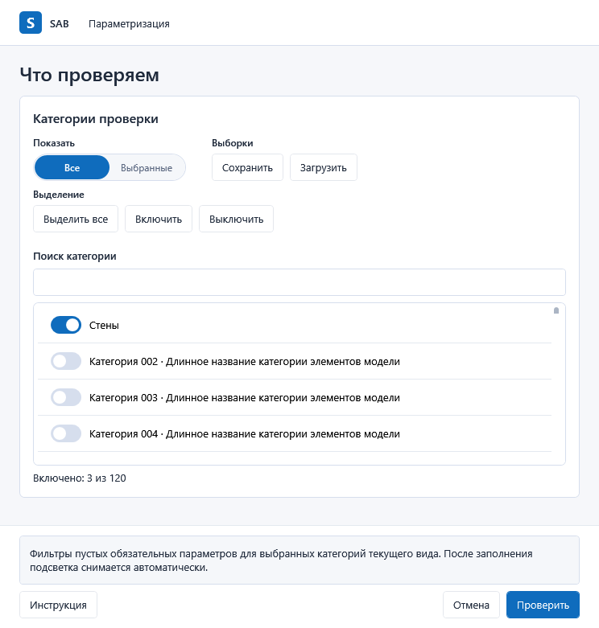
check-settings-search-last
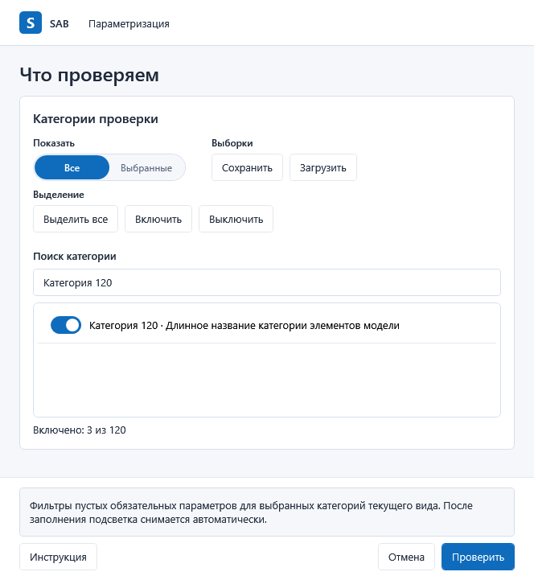
check-settings-validation
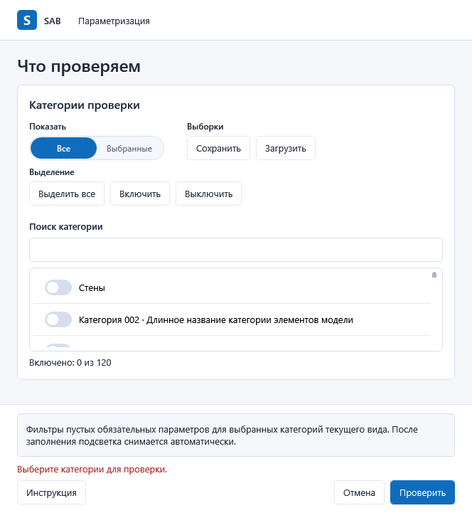
picker-after-selection
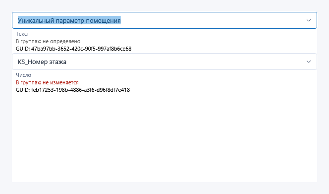
picker-explicit-popup
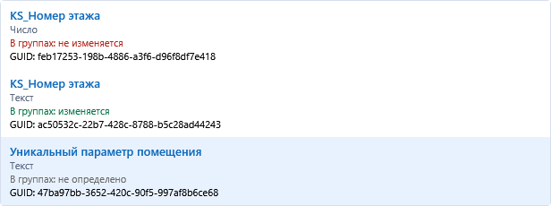
sources-closed-after-load
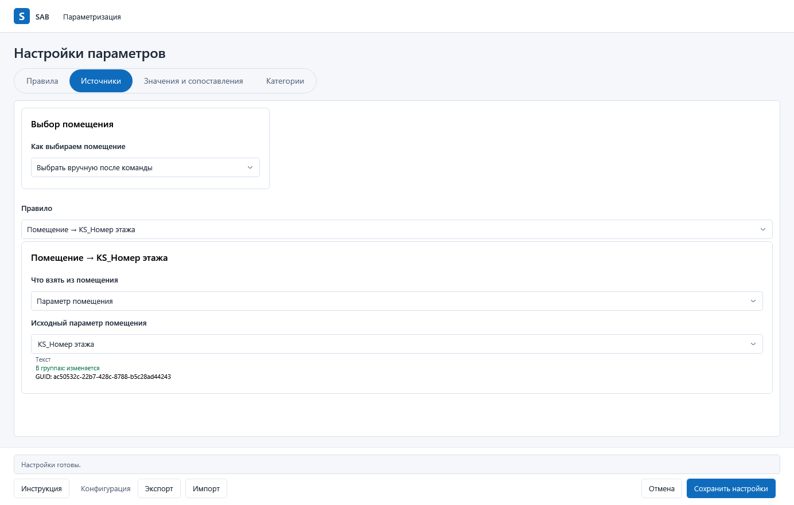
sources-minimum
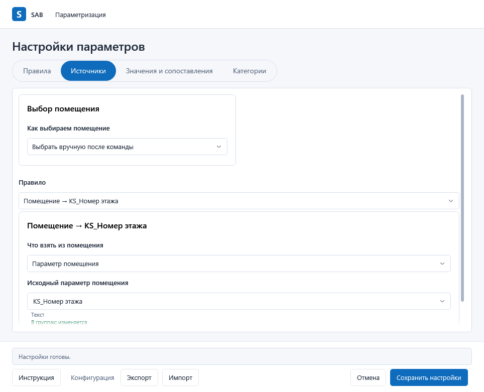